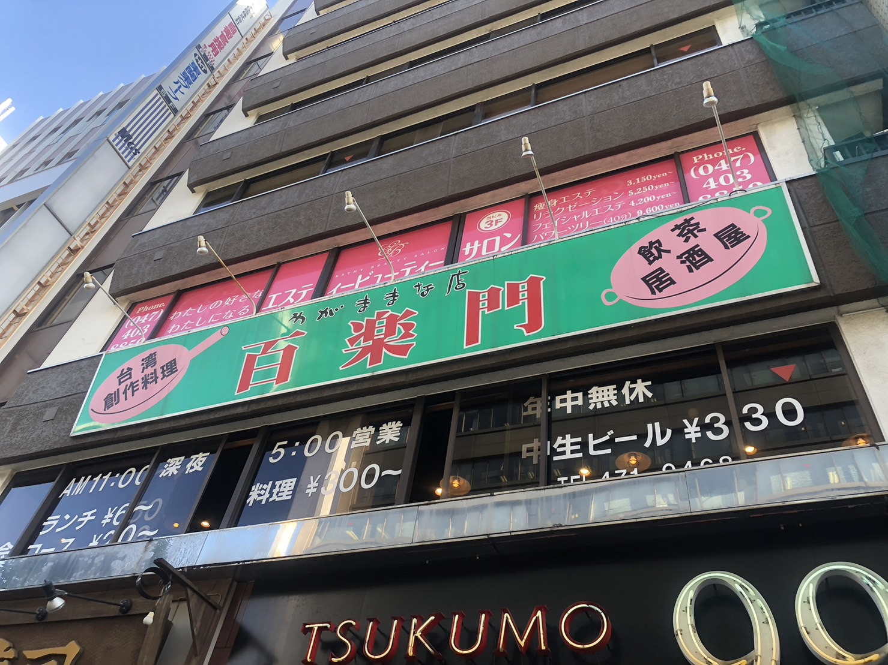
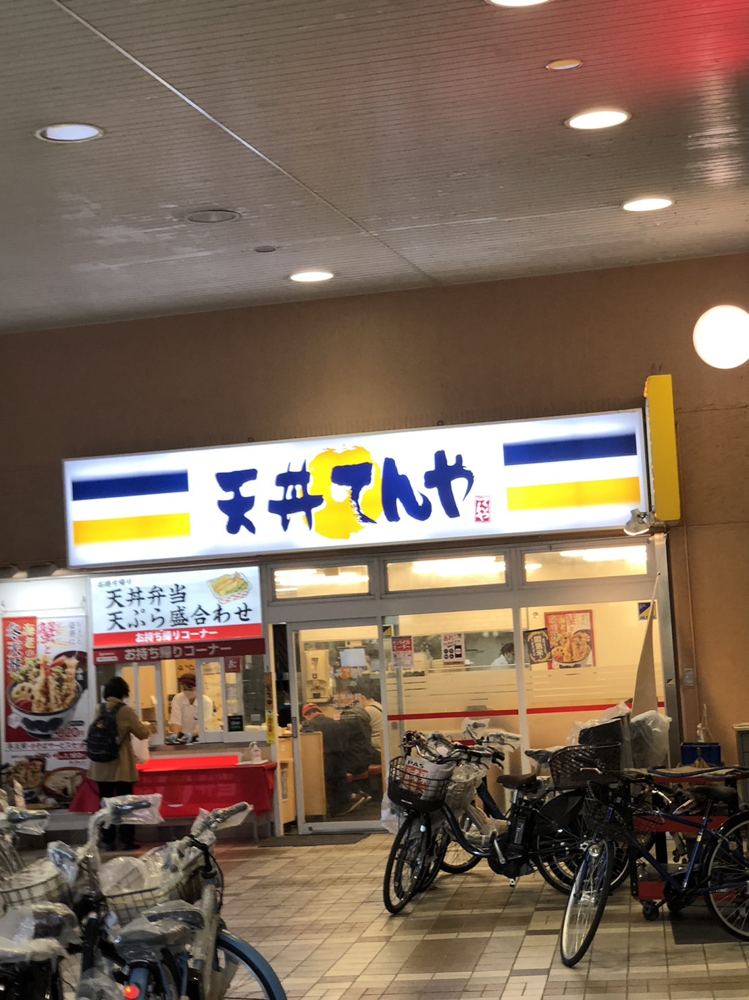
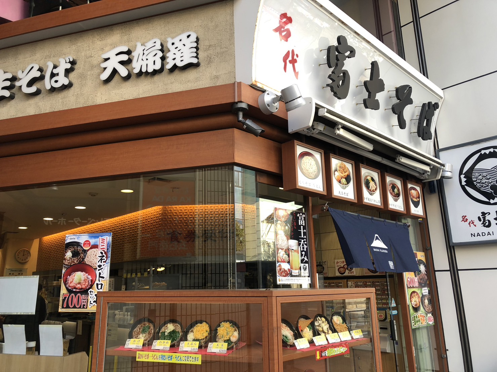

| 特徴 | JR津田沼駅北口パルコ側に進み、徒歩3分ほど歩くと「九十九ラーメン」「肉寿司」のビル2階に百楽園があります。 値段も安くどのメニューも1000円以内で食べれるのでおすすめです。 |
| 住所 | 274-0825 千葉県船橋市前原西2丁目21-6 東関東ビル2F |
| 電話番号 | 047-471-9468 |
| 営業時間 | 月～土 11:00-14:30 17:00-翌5:00 日 11:00-24:00 ＊(ラストオーダー閉店30分前) |

| 特徴 | JR津田沼駅北口から徒歩3分人気チェーン店。 てんやではいつでも「揚げたて、出来立て」の天ぷらが1000円以内で食べれるお店です。 |
| 住所 | 275-0016 千葉県習志野市津田沼1丁目10-34 |
| 電話番号 | 047-493-1361 |
| 営業時間 | 日～土・祝日 10:30-22:00 |

| 特徴 | JR津田沼駅北口から徒歩1分の場所にある蕎麦屋。 富士そばではそばだけではなくラーメン、カツ丼、カレーなど蕎麦以外のメニューも豊富にあり蕎麦とのセットメニューもあるのでとてもお手頃な価格で満腹になることができます。 |
| 住所 | 275-0016 千葉県習志野市津田沼1丁目2-19 つるやビル1階 |
| 電話番号 | 03-6376-3526 |
| 営業時間 | 月～日・祝日 5:00-1:00 ＊(ラストオーダー閉店30分前) |